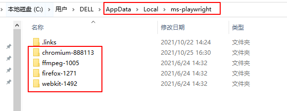
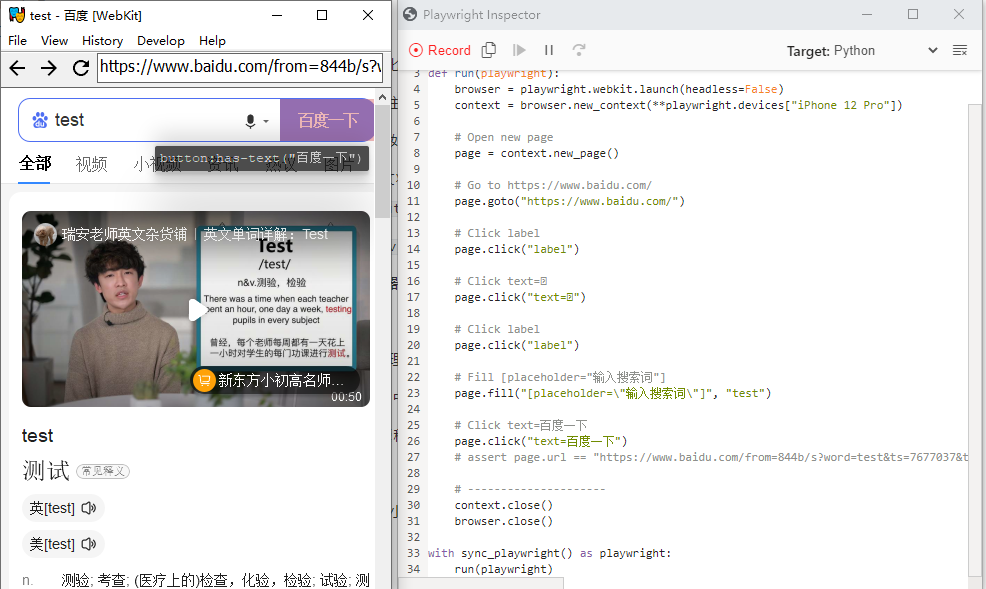
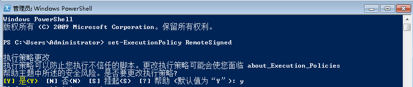

playwright是由微软开发的Web UI自动化测试工具， 支持Node.js、Python、C# 和 Java语言，本文将介绍playwright的特性以及它的简单使用。
playwright特性
playwright具有以下特点：
一、支持所有主流浏览器
- 支持所有主流浏览器：基于Chromium内核的Google Chrome 和 Microsoft Edge浏览器), WebKit内核的Apple Safari 和 Mozilla Firefox浏览器，不支持IE11。
- 跨平台：Windows、Linux 和macOS
- 可用于模拟移动端WEB应用的测试，不支持在真机上测试。
- 支持无头模式（默认）和有头模式
二、快速可靠的执行
- 自动等待元素
- Playwright基于Websocket协议，可以接受浏览器（服务端）的信号。selenium采用的是HTTP协议，只能客户端发起请求。
- 浏览器上下文并行：单个浏览器实例下创建多个浏览器上下文，每个浏览器上下文可以处理多个页面。
- 有弹性的元素选择：可以使用文本、可访问标签选择元素。
三、强大的自动化能力
- playwright是一个进程外自动化驱动程序，它不受页面内JavaScript执行范围的限制，可以自动化控制多个页面。
- 强大的网络控制：Playwright 引入了上下文范围的网络拦截来存根和模拟网络请求。
- 现代web特性：支持Shadow DOM选择，元素位置定位，页面提示处理，Web Worker等Web API。
- 覆盖所有场景：支持文件下载、上传、OOPIF（out-of-process iframes），输入、点击，暗黑模式等。
安装
Playwright有Node.js、Python、C# 和 Java语言版本，本文介绍Python版本的Playwright使用方法。
Playwright的Python版本仓库地址：https://github.com/microsoft/playwright-python
官方文档地址：https://playwright.dev/python/docs/intro
Playwright安装简单，pip安装时会自动下载浏览器驱动：
1 | pip install playwright |
安装时会自动下载浏览器依赖，windows系统在%USERPROFILE%\AppData\Local\ms-playwright 路径下。

命令行工具
脚本录制
在命令行窗口使用如下语法格式进行脚本录制：
1 | npx playwright codegen [options] [url] |
options参数：
-o, --output <file name>：保存生成脚本--target <language>：生成的脚本语言，可以设置javascript, test, python, python-async和csharp，默认为python。-b, --browser <browserType>：要使用的浏览器，可以选择cr, chromium, ff, firefox, wk和webkit，默认chromium。--channel <channel>：chromium版本，比如chrome, chrome-beta, msedge-dev等，--color-scheme <scheme>：模拟器的颜色主题，可选择light 或者 dark样式。--device <deviceName>：模拟的设备，比如iPhone 11。--save-storage <filename>：保存上下文状态，用于保存cookies 和localStorage，可用它来实现重用。例如playwright codegen --save-storage=auth.json--load-storage <filename>：加载--save-storage保存的数据，重用认证数据。--proxy-server <proxy>：指定代理服务器--timezone <time zone>： 指定时区--geolocation <coordinates>：指定地理位置坐标--lang <language>：指定语言/地区，比如中国大陆：zh-CN--timeout <timeout>：超时时间，定位毫秒，默认10000ms--user-agent <ua string>：用户代理--viewport-size <size>：浏览器窗口大小-h, --help：查看帮助信息
示例：模拟iPhone 12 Pro设备打开百度，使用Chromium驱动，生成的脚本语言设置为python，保存名称为test_playwright.py：
1 | playwright codegen -o test_playwright.py --target python -b chromium --device="iPhone 12 Pro" https://www.baidu.com/ |

对页面进行的操作会生成对应脚本代码。
打开网页
语法格式：1
npx playwright open [options] [url]
除了没有 -o 和 --target options参数外，playwright open 支持 playwright codegen 的其它参数。
1 | playwright open https://www.baidu.com/ # 默认使用Chromium打开 |
截图
语法格式：
1 | npx playwright screenshot [options] <url> <filename> |
options参数和 playwright codegen 的选项类似，可以使用 playwright screenshot --help 命令查看。
1 | playwright screenshot --device="iPhone 12 Pro" -b wk https://www.baidu.com/ baidu-iphone.png # 截取显示的页面 |
同步和异步API
Playwright支持同步和异步两种API，使用异步API需要导入asyncio库，它是一个可以用来实现Python协程的库，更详细介绍可参考Python协程 。
下面介绍如何使用python语言编写简单的playwright自动化脚本。
一共有2条测试用例，用例1步骤如下：
- chrome浏览器打开百度
- 搜索框输入“test”
- 点击百度一下搜索
- 点击搜索结果的第2页
用例2步骤：
- chrome浏览器打开搜狗搜索
- 搜索框输入“test”
- 点击搜狗搜索
- 点击搜索结果的第2页
1、同步方式
1 | import time |
执行结果：1
2
3
4
5
6
7testcase1 start
百度一下，你就知道
testcase1 done
testcase2 start
搜狗搜索引擎 - 上网从搜狗开始
testcase2 done
Running time: 11.476110458374023 Seconds
2、异步方式
1 |
|
执行结果：1
2
3
4
5
6
7
8before await
testcase1 start
testcase2 start
百度一下，你就知道
搜狗搜索引擎 - 上网从搜狗开始
testcase1 done
testcase2 done
Running time: 6.0248863697052 Seconds
可以看到，使用异步编程的方式可以显著提升测试效率。
浏览器
前面提到过，Playwright支持所有主流浏览器，下面介绍4种浏览器的启动方法：
1 | # chrome |
浏览器上下文
在进行web自动化控制之前需要对浏览器进行实例化，比如：
1 | browser = p.chromium.launch(channel="chrome", headless=False) |
browser是一个Chromium实例，创建实例其实是比较耗费资源的，Playwright支持在一个browser实例下创建多个浏览器上下文（BrowserContext），BrowserContext的创建速度很快，并且比创建browser实例消耗资源更少。对于多页面场景可以使用创建浏览器上下文的方式。1
2
3
4
5
6
7
8
9
10
11
12
13
14
15
16
17
18
19
20
21
22
23
24
25
26import asyncio
from playwright.async_api import async_playwright
async def testcase1():
print('testcase1 start')
async with async_playwright() as p:
browser = await p.chromium.launch(headless=False)
page = await browser.new_page()
await page.goto("https://www.baidu.com/")
print(await page.title())
await page.fill("input[name=\"wd\"]", "test")
await page.click("text=百度一下")
await page.click("#page >> text=2")
context = await browser.new_context()
page2 = await context.new_page()
await page2.goto("https://www.sogou.com/")
print(await page2.title())
await page2.fill("input[name=\"query\"]", "test")
await page2.click("text=搜狗搜索")
await page2.click("#sogou_page_2")
print(await page.title())
print('testcase1 done')
asyncio.run(testcase1())
多页面
一个浏览器上下文可以有多个页面，也就是多个窗口。
1 | async def testcase2(): |
断言
Python中可以使用assert 进行断言：
1 | assert page.title() == "百度一下，你就知道" |
除了使用assert断言以外，还可以使用功能更加强大的断言方法Hamcrest ，具有丰富的断言匹配器。
Hamcrest文档：https://pyhamcrest.readthedocs.io/en/v2.0.2/tutorial/
安装PyHamcrest：1
pip install PyHamcrest
1
2
3from hamcrest import *
assert_that(page.title(), equal_to("百度一下，你就知道"))
playwright Robot Framework库
如果你使用robot framework来管理和编写测试用例，可以使用robotframework-browser测试库。
browser测试库的github地址：https://github.com/MarketSquare/robotframework-browser, 安装方法参考README.md文档。
关键字使用说明文档：https://marketsquare.github.io/robotframework-browser/Browser.html
安装失败：
https://github.com/MarketSquare/robotframework-browser/issues/682
可能是node版本太高，可以使用node v12.9.1版本
常见报错
Node版本问题
1 | Node.js is only supported on Windows 8.1, Windows Server 2012 R2, or higher. |
如果是windows7系统，错误原因可能是node版本太高，v12.16.2以上版本不支持win7，node历史版本下载地址：https://nodejs.org/dist/。
卸载安装低版本后再次执行脚本，如果还是报上面的错误，可以尝试设置系统变量 NODE_SKIP_PLATFORM_CHECK 绕过校验。
1 | set NODE_SKIP_PLATFORM_CHECK=1 |
安装msedge报错
1 | $ playwright install msedge |
解决方案：
打开 Windows PowerShell，执行如下命令：1
set-ExecutionPolicy RemoteSigned

重新执行 playwright install msedge 命令安装。
本文标题:Web自动化测试之playwright：概述
文章作者:hiyo
文章链接:https://hiyongz.github.io/posts/web-testing-with-playwright-introduction/
许可协议:本博客文章除特别声明外，均采用CC BY-NC-ND 4.0 许可协议。转载请保留原文链接及作者。